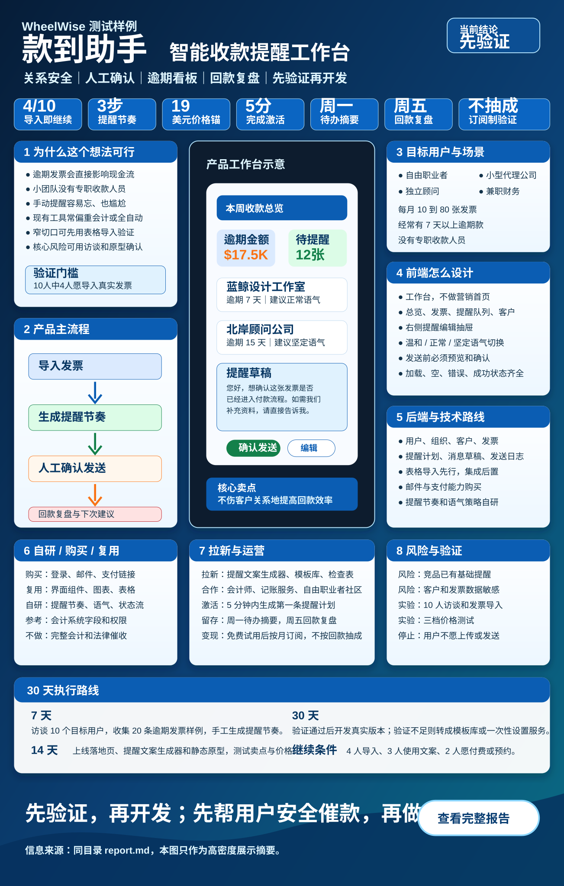

满版产品信息图
这张图浓缩了完整报告：卖点、用户、流程、前端、后端、技术、拉新、风险和 30 天路线。

是否可行，为什么可行
逾期发票影响现金流，小团队通常没有专职收款人员。
不挑战完整会计系统，只做逾期后的提醒节奏和人工确认。
表格导入、文案生成和手工服务即可在 7 到 30 天内验证。
产品长什么样
导入发票
上传表格或手动录入客户、金额、到期日。
查看队列
按未到期、逾期、暂停、已付款分组。
生成文案
自动给出温和、正常、坚定三种语气。
确认发送
用户保留最后控制权，避免伤客户关系。
回款复盘
每周看提醒效果和仍需跟进的客户。
前端设计
产品首页是工作台，不是营销页。左侧导航包含总览、发票、提醒队列、客户、设置；右侧用提醒编辑抽屉承载语气、正文、发送预览和确认。
工作台截面
后端设计与技术路线
后端围绕用户、组织、客户、发票、提醒计划、消息草稿、发送日志和付款状态建模。提醒策略自研，登录、邮件、支付链接购买成熟能力。
| 层 | 建议 |
|---|---|
| 前端 | Next.js、TypeScript、Tailwind CSS、shadcn/ui |
| 数据 | Supabase、PostgreSQL |
| 发送 | Resend 或 Postmark |
| 付款 | Stripe 付款链接 |
| 智能 | OpenAI 接口生成提醒草稿 |
拉新、激活和运营
拉新
提醒文案生成器、催款邮件模板库、小型服务商回款检查表、会计师合作。
激活
用户 5 分钟内上传一张发票并生成第一条提醒计划。
留存
周一待跟进摘要，周五回款复盘，帮助用户形成固定收款习惯。
调研证据和启示
| 来源 | 看到什么 | 怎么影响方案 |
|---|---|---|
| QuickBooks 逾期付款报告 | 小企业未付发票和现金流压力明显相关。 | 证明痛点不是想象出来的，但要找高频欠款用户。 |
| Chaser | 专业收款自动化已覆盖邮件、短信、门户和预测。 | 不要正面做重型系统，要从轻量关系安全切入。 |
| HoneyBook | 付款提醒既有自动也有手动，且受文件状态影响。 | 人工确认和状态流转应放在首版核心。 |
| FreshBooks 与 Stripe | 订阅、试用、按已付款发票比例收费等模式都存在。 | 首轮用简单订阅验证，付款基础设施直接购买。 |
用户假设和验证问题
关系压力
用户真正害怕的不是发一封邮件，而是语气不合适导致客户关系变差。
数据信任
用户愿不愿意上传逾期发票，是产品能否成立的第一道门槛。
人工确认
人工确认可能降低自动化程度，但会提升信任和可控感。
付费意愿
如果用户只觉得模板有趣但不愿付费，产品应转成轻服务或工具引流。
哪些自研，哪些购买，哪些复用
| 模块 | 决策 | 原因 | 兜底 |
|---|---|---|---|
| 用户登录 | 购买 | 安全要求高，不是差异化。 | 后续可迁移到自托管认证。 |
| 发票导入 | 自研 | 字段映射和验证流程决定首版体验。 | 先提供模板下载。 |
| 提醒节奏 | 自研 | 这是产品核心差异化。 | 用固定模板兜底。 |
| 邮件发送 | 购买 | 送达率、退信和信誉维护复杂。 | 支持复制文案自行发送。 |
| 前端组件 | 复用 | 看板、表格、抽屉和图表都是成熟模式。 | 用行业化文案和状态设计拉开差异。 |
实施细节：从前端动作到后端处理
上传
用户上传发票表格，前端预览字段和错误。
解析
后端生成客户、发票和付款链接字段。
编排
规则引擎按到期日和关系标签生成提醒计划。
生成
智能文案服务输出草稿，默认进入待确认。
记录
发送结果、失败原因和付款标记写入日志。
商业化设计
免费试用
允许导入 10 张发票并生成提醒草稿，用于验证激活。
个人版
每月 9 到 19 美元，适合自由职业者和独立顾问。
小团队版
每月 29 到 49 美元，支持团队成员、客户分组和周报。
不建议按回款金额抽成，因为这会引发信任和归因争议。
验证实验表
| 实验 | 验证内容 | 成功标准 | 失败后怎么做 |
|---|---|---|---|
| 发票导入测试 | 用户是否愿意使用真实流程 | 十人中四人完成导入 | 改成复制粘贴信息 |
| 文案偏好测试 | 语气建议是否有价值 | 六人选择并编辑文案 | 转成模板库 |
| 发送意愿测试 | 用户是否信任工具代发 | 三人愿意系统发送 | 保持只生成不发送 |
| 价格测试 | 是否愿意付费 | 一成访客预约或留邮箱 | 改成一次性设置服务 |
风险和验证
| 风险 | 验证方式 | 处理 |
|---|---|---|
| 竞品已有提醒 | 测试“关系安全”卖点是否更打动用户 | 聚焦人工确认和语气 |
| 用户不愿上传发票 | 十人访谈和脱敏发票导入 | 降级为文案生成器 |
| 付费意愿不足 | 三档价格落地页测试 | 转为一次性设置服务 |
30 天执行路线
完整报告内容重组展示
下面不是逐字转换 Markdown，而是按读者理解顺序重新组织源报告的实质内容。
目标用户
1 到 20 人的小型服务商、自由职业者、小型代理公司、独立顾问。早期用户每月开 10 到 80 张发票，经常有 7 天以上逾期款。
市场证据
QuickBooks 逾期付款报告证明痛点存在；Chaser、HoneyBook、FreshBooks、Stripe 证明替代方案成熟，因此必须避开完整会计系统。
最小可行范围
发票导入、逾期看板、三步提醒节奏、可编辑文案、人工确认、发送记录、回款复盘。
范围外
完整会计系统、债务催收服务、法律函件自动生成、多币种税务、企业级审批流。
自研与购买
登录、邮件、支付购买；组件和图表复用；提醒节奏、关系语气和状态流自研；会计系统集成先参考后实现。
继续条件
10 个用户中 4 个完成导入，3 个使用提醒文案，2 个愿意付费或预约后续试用。